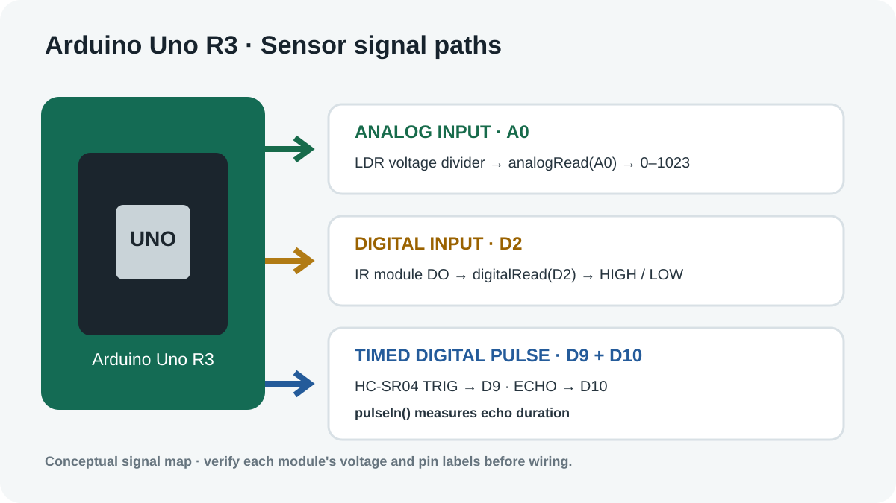
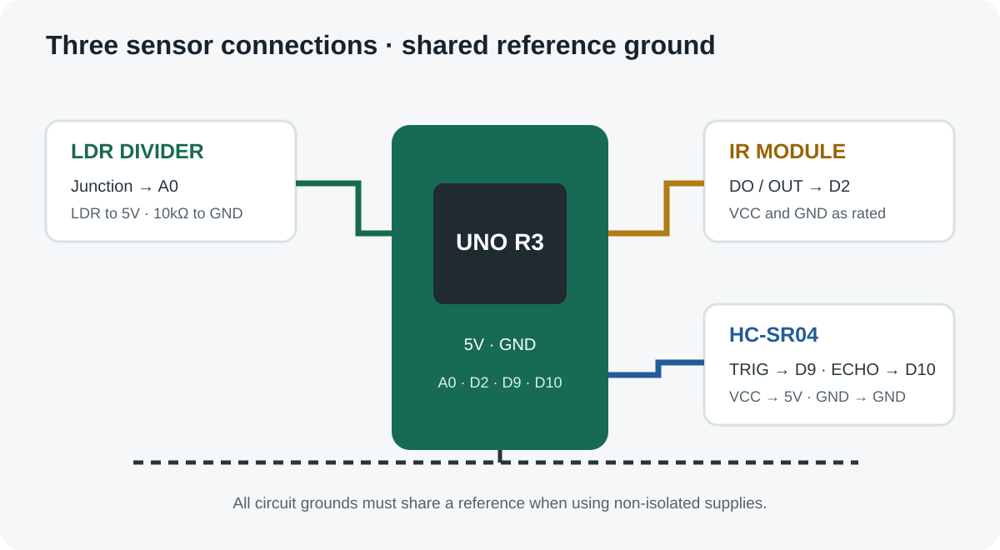

Connecting a sensor to an Arduino Uno is not just a matter of matching wire colours. First identify what the module outputs—an analogue voltage, a digital HIGH/LOW signal, or a timed pulse. Then choose a compatible pin and check the module's supply-voltage requirements.
If you are new to the board, start with the Arduino Uno R3 pinout and beginner's guide for the board layout and basic setup. This page focuses on the next step: connecting sensors and interpreting their signals correctly.

Before connecting a sensor
Read the label or datasheet for the exact sensor board. Modules that look similar can use different pin orders, supply ranges and output circuits. Check these points before applying power:
- Supply voltage: confirm whether the module accepts 5 V, 3.3 V or a wider range. Never assume every sensor board is 5 V tolerant.
- Output type: determine whether the signal is analogue, digital, open-collector/open-drain or a pulse whose duration carries information.
- Logic level: check the maximum voltage that can appear on an Uno input. A 3.3 V-only device may need level shifting for signals in both directions; a 5 V Uno output can damage a non-5-V-tolerant input.
- Current: power the sensor from a suitable supply. Do not drive motors, relays or high-current loads directly from an I/O pin.
- Ground: when using separate supplies, connect grounds together unless the circuit is intentionally isolated.
Arduino Uno pins: which one should you use?
The classic Uno R3 has 14 digital I/O pins (D0–D13), six analogue input pins (A0–A5) and six PWM-capable digital pins (3, 5, 6, 9, 10 and 11). Analogue pins can also be used as digital I/O when needed.
A0–A5 Analogue input
Measures analogue voltage through the ADC. Use these pins for an LDR voltage divider or an analogue gas or light module.
Key point: analogRead() returns 0–1023 at the default 10-bit resolution.
D0–D13 Digital I/O
Reads or outputs digital HIGH/LOW states. A typical use is the digital output from an IR obstacle module.
Key point: D0 and D1 are also used for serial communication. Avoid them while using USB serial unless planned.
D3, D5, D6, D9, D10, D11 PWM output
Provides hardware PWM through analogWrite(). Use it for LED brightness or a compatible motor-driver speed input.
Key point: PWM is a rapidly switched digital signal, not a true analogue voltage.
5V, 3.3V, GND Power
Supply and reference connections for sensor modules.
Key point: Check the module's rated supply voltage and current before connecting it.
On a standard Uno R3, the analogue-to-digital converter maps the selected input voltage to a number from 0 to 1023. With the default 5 V reference, a reading of about 512 represents roughly half the reference voltage (about 2.5 V). It is not a direct measurement of lux, temperature or another physical unit; calibration and the sensor's circuit determine how to interpret it.
A safe, repeatable sensor-wiring method
- Disconnect USB and external power before changing connections.
- Find the exact module pin labels or datasheet. Identify VCC, GND and signal pins.
- Connect the module to a supply voltage it supports. Connect GND to Arduino GND.
- Connect the signal to a suitable input pin. Keep signal wires short while testing.
- Power the board and test one sensor with a small sketch before adding other components.
- Open Serial Monitor at the baud rate used by the sketch and compare readings while changing the sensor input.

Example 1: read an LDR using analogue input A0
A bare light-dependent resistor (LDR) changes resistance with light. The Arduino cannot measure resistance directly, so pair the LDR with a fixed resistor to make a voltage divider. In this example, connect 5 V to the LDR, the junction to A0, and a 10 kΩ resistor from the junction to GND. The voltage at A0 rises as the LDR becomes brighter because its resistance falls.
- LDR first legConnect to 5V.
- LDR second leg and fixed resistor first legJoin at the A0 junction.
- 10 kΩ resistor second legConnect to GND.
const int ldrPin = A0;
void setup() {
Serial.begin(9600);
}
void loop() {
int reading = analogRead(ldrPin);
float voltage = reading * (5.0 / 1023.0);
Serial.print("ADC: ");
Serial.print(reading);
Serial.print(" | Approx. voltage: ");
Serial.println(voltage, 2);
delay(250);
}Open Serial Monitor, note the reading in bright and dim conditions, and use those measured values to choose a threshold for your project. The voltage calculation assumes the default 5 V analogue reference; actual board voltage and ADC characteristics introduce small differences. The ADC number is not a lux value.
For the sensor's resistance behaviour and other applications, see the main-site LDR sensor working principle and applications guide. Keep the voltage-divider circuit and project calibration in this practical article.
Example 2: read a digital IR obstacle module
Many reflective IR obstacle modules include an onboard comparator and a small potentiometer. Their digital output changes state when the reflected infrared signal crosses the module's threshold. The active state is not universal: some boards output LOW when an obstacle is detected, while others behave differently. Check the module documentation or observe its indicator LED and serial output.
- VCCConnect to a supply accepted by the module; verify its rating.
- GNDConnect to Arduino GND.
- DO / OUTConnect to digital pin D2.
const int irPin = 2;
void setup() {
pinMode(irPin, INPUT);
Serial.begin(9600);
}
void loop() {
int state = digitalRead(irPin);
Serial.print("IR output: ");
Serial.println(state == HIGH ? "HIGH" : "LOW");
delay(100);
}This sketch reports the electrical output only; it deliberately does not label HIGH or LOW as “obstacle detected” because module polarity varies. Once you confirm your board's active state, add that logic to your project. Adjust the potentiometer in small steps and test with the actual target surface and distance.
Example 3: connect an HC-SR04 ultrasonic sensor
The HC-SR04 uses two digital signal pins. The Arduino sends a short trigger pulse; the sensor returns an echo pulse whose duration represents the sound's round-trip travel time. The commonly used conversion is duration × 0.0343 ÷ 2 for an approximate distance in centimetres at around room temperature.
- VCCConnect to 5V for a standard 5V HC-SR04 module.
- GNDConnect to GND.
- TRIGConnect to digital pin D9.
- ECHOConnect to digital pin D10.
const byte trigPin = 9;
const byte echoPin = 10;
void setup() {
pinMode(trigPin, OUTPUT);
pinMode(echoPin, INPUT);
Serial.begin(9600);
}
void loop() {
digitalWrite(trigPin, LOW);
delayMicroseconds(2);
digitalWrite(trigPin, HIGH);
delayMicroseconds(10);
digitalWrite(trigPin, LOW);
// Timeout prevents waiting indefinitely (30 ms ≈ 5 m round trip).
unsigned long duration = pulseIn(echoPin, HIGH, 30000UL);
if (duration == 0) {
Serial.println("No echo: check target, wiring and range");
} else {
float distanceCm = duration * 0.0343 / 2.0;
Serial.print("Distance: ");
Serial.print(distanceCm, 1);
Serial.println(" cm");
}
delay(100);
}The timeout is a guard against a missing echo, not a promise that the sensor measures accurately to five metres. The usable range depends on the module, target size and angle, surface, surroundings and environmental conditions. Avoid treating a zero reading as a real distance. For pinout details and common faults, use the dedicated HC-SR04 wiring and Arduino code guide and HC-SR04 troubleshooting guide.
PWM pins: what they can and cannot do
On the classic Uno R3, analogWrite() on pins 3, 5, 6, 9, 10 or 11 produces pulse-width modulation (PWM). The output switches between LOW and HIGH; changing the duty cycle changes the average energy delivered to a suitable load. It does not create a steady, adjustable analogue voltage from the pin.
const byte ledPin = 9;
void setup() {
pinMode(ledPin, OUTPUT);
}
void loop() {
for (int level = 0; level <= 255; level++) {
analogWrite(ledPin, level);
delay(8);
}
for (int level = 255; level >= 0; level--) {
analogWrite(ledPin, level);
delay(8);
}
}Use a suitable series resistor with a bare LED. For motors, use a motor driver rated for the motor's voltage and current; never connect a motor directly to an Arduino I/O pin. PWM pin availability and timer behaviour can differ on other boards, and some libraries use hardware timers that affect PWM on particular pins.
Sensor not working? Check these common causes
- Always reads 0 or 1023Check the analogue divider path, signal pin, common ground and whether the input is floating or shorted to a rail.
- IR output seems invertedConfirm the module's active-LOW or active-HIGH behaviour; do not assume polarity.
- HC-SR04 returns zeroCheck TRIG/ECHO pin assignments, 5V supply, ground, target angle and timeout. Test a large flat target at a sensible distance.
- Values jump aroundInspect loose jumper wires, supply stability, electrical noise and sensor-specific filtering or averaging needs.
- Board resets when a motor startsUse a properly rated motor driver and suitable motor supply. Check wiring and shared ground; never power the motor from an I/O pin.
- Sensor gets hot or stops respondingDisconnect power immediately and recheck polarity, voltage rating and wiring against the module datasheet.
Frequently asked questions
Can I connect multiple sensors to one Arduino Uno?
Yes, if enough suitable pins remain and the combined current draw stays within the board and supply limits. Check pin conflicts, libraries and timing requirements before combining sketches.
Can I use an analogue sensor on a digital pin?
Not if you need its changing analogue voltage. Use A0–A5 with analogRead(). Some modules also provide a separate digital threshold output that can be read with digitalRead().
Are all Arduino Uno pins 5 V tolerant?
The classic Uno R3 uses 5 V logic, but this does not make every attached sensor safe at 5 V. Follow the sensor's supply and input/output voltage specifications. Other Uno-branded or compatible boards may use different logic levels.
Is PWM the same as analogue output?
No. PWM is a switched digital waveform. A load or filter may respond to its average, but the pin itself is not producing a true continuously variable analogue voltage.
Explore more Arduino guides
Continue with related Arduino tutorials, sensor projects and practical wiring guides in the Vayuyaan learning hub.
Browse Arduino guidesTechnical references: Arduino Uno Rev3 hardware documentation; Arduino analogRead() reference; Arduino analogWrite() reference; Arduino pulseIn() reference. Confirm module-specific pinouts and electrical ratings using the datasheet supplied by its manufacturer.